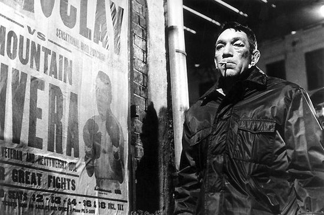

<!DOCTYPE html PUBLIC "-//W3C//DTD XHTML 1.0 Transitional//EN" "http://www.w3.org/TR/xhtml1/DTD/xhtml1-transitional.dtd">
<html xmlns="http://www.w3.org/1999/xhtml">


<!DOCTYPE html>
<html>
<head>
    <title>Requiem of a Heavyweight</title>
  <style>
    .colorBlock {
      width: 100px;
      height: 10px;
      margin-left:-200px;
      margin-top: auto;
      outline-color:white;
      outline-width:medium;
    }
    #Black {
      background-color: #666666;
    }
    #Blue {
      background-color: #FF66CC;
    }
    #Red {
      background-color: #ABA104;
    }
    #Green {
      background-color: #FF5050;
    }
  </style>
</head>
<body>

	<div class="colorBlock" id="Black"></div>
 	<div class="colorBlock" id="Blue"></div>
  	<div class="colorBlock" id="Red"></div>
  	<div class="colorBlock" id="Green"></div>
  	
    <script src="http://code.jquery.com/jquery-1.11.0.min.js" type="text/javascript" charset="utf-8"></script>
    <script type="text/javascript" charset="utf-8">
   //Create anonymous function that listens for a click on anything with the class colorBlock
    $(".colorBlock").click(function() {
      //Get the background color of the clicked color block by using the this object
      var $backgroundColor = $(this).css("background-color");
      //Set the body's background-color to the received background-color
      $("body").css("background-color", $backgroundColor);
    });
  </script>
</body>
</html>


<head>
<meta content="en-gb" http-equiv="Content-Language" />
<meta content="text/html; charset=utf-8" http-equiv="Content-Type" />
<title>HomeRequiem of a HeavyweightRock</title>
<style type="text/css">

#top				{ background-color:white; width:100%; overflow: hidden; padding:20px 0;
						border-bottom:#eee; 	}
						
.auto-style5 {
	margin-left: 0px;
}
ul {
    list-style-type: none;
    margin: 0;
    padding: 0;
    overflow: hidden;
    background-color: #333;
}

li {
    float: left;
}

.active {
    background-color: red;
}

li a {
    display: inline-block;
    color: white;
    text-align: center;
    padding: 14px 16px;
    text-decoration: none;
}


#slider {
    width: 900px; /* important to be same as image width */
    height: 400px; /* important to be same as image height */
    position: relative; /* important */
	overflow: hidden; /* important */
	text-align:left;

}

#slider ul 		{ list-style-type: none;}

#sliderContent {
    width: 900px; /* important to be same as image width or wider */
    position: absolute;
	top: 0;
	margin-left: 0;
}

#slider ul li 	{ margin-left:0px; }


.sliderImage {
    float: left;
    position: relative;
	display: none;
}

.sliderImage span {
    position: absolute;
    padding: 0px;
    width: 200px;  /* This is the width of the caption box  */
	height:100; /* This is the height of the caption box  */
    background-color: #000;  /* This sets the background color of the semi transparent box */
    /* If you do not want the transparent content field to appear, change all opacity values to 0 */
	filter: alpha(opacity=); -moz-opacity: 0.7; -khtml-opacity: 0.7; opacity: 0.7;
	font-family:Arial, Helvetica, sans-serif;
	font-size:15px;
	line-height:75%;
    color: #fff; /* This is the color of the text in the caption box */
    display: none;
}


.top { top: 0; left: 700px; }  

.sliderImage span strong { 
	color:#Red;  /* This is the color of the title text in the caption box */
	font-size: 20px; /* This is the font size of the title text in the caption box */
	line-height:300%;
	}

.clear { clear: both; }


#subbanner 			{ width:900px; height:70px; background-color:black; overflow:hidden; padding:10px 0;   }
#subbanner p		{ line-height:180%; font-size:16px; font-weight:bold; color:#fff; text-align:center;  }


#content 			{ float:left; width:900px; padding:20px; background-color: white;  }
#content h1			{ margin:0 0 20px 0; border-bottom:1px #999 solid; padding:20px 0; background-color: white; }
#content p			{ line-height:150%; margin:10px 10px 0 0;  background-color: white;}
#content img		{ padding:8px; border:1px #ccc solid; margin:8px; background-color: white; }


.auto-style6 {
	margin-left: 42px;
}
#content h2			{ margin:10px 0; background-color: white; }
						
#footer 			{ clear:both; padding:10px 0; background-color:#000; width:900px; }


.auto-style7 {
	color: #ECE0E0;
}
.auto-style8 {
	margin-top: 0px;
}
</style>
<link href="CSS/slider.css" rel="stylesheet" type="text/css" />
</head>

<body style="margin-left: 209px; background-color: #800000; ">

<div id="top"  style="height: 93px; width: 895px;">
	</div>
<div class="auto-style5" style="width: 900px">

<hr style="width: 895px; height: -12px" />

<ul style="height: 50px; width: 899px;" class="auto-style5">
  <li><a class="active" href="index.html">HOME</a></li>
  <li><a href="Requiem%20of%20heavyweight.html">Requiem of a Heavyweight</a></li>
  <li><a href="Rocky.html">Rocky</a></li>
  <li><a href="Rocky%20III.html">Rocky III</a></li>
  <li><a href="Rocky%20V.html">Rocky V</a></li>
  <li><a href="About.html">About</a></li>
  <li style="height: 47px"><a href="shop.html">Shop</a></li>
</ul>
</div>
     <hr style="width: 900px; height: -15px" class="auto-style5" />

     <div id="content" style="width: 860px" class="auto-style8">
            <h1>Requiem of a Heavyweight</h1>
			<table style="width: 100%">
				<tr>
					<td style="width: 446px">
			</td>
					<td> <div id="player">
	      <audio controls>
  <source src="Sound/heavyweightaudio.mp3" type="audio/mpeg">
Your browser does not support the audio element.
</audio>
 </div>
</td>
			</table>
			<p class="auto-style8">
			<b style="color: rgb(51, 51, 51); font-family: Verdana, Arial, Helvetica, sans-serif; font-size: 11px; font-style: normal; font-variant-ligatures: normal; font-variant-caps: normal; letter-spacing: normal; orphans: 2; text-align: start; text-indent: 0px; text-transform: none; white-space: normal; widows: 2; word-spacing: 0px; -webkit-text-stroke-width: 0px; background-color: rgb(255, 255, 255); text-decoration-style: initial; text-decoration-color: initial;">
			Requiem For a Heavyweight</b><span style="color: rgb(51, 51, 51); font-family: Verdana, Arial, Helvetica, sans-serif; font-size: 11px; font-style: normal; font-variant-ligatures: normal; font-variant-caps: normal; font-weight: 400; letter-spacing: normal; orphans: 2; text-align: start; text-indent: 0px; text-transform: none; white-space: normal; widows: 2; word-spacing: 0px; -webkit-text-stroke-width: 0px; background-color: rgb(255, 255, 255); text-decoration-style: initial; text-decoration-color: initial; display: inline !important; float: none;"><span>&nbsp;</span>(1962) 
			is a hard-boiled melodrama of a boxer's forced retirement and his 
			floundering for an occupation after 17 years in boxing. Nearly 
			unrecognizable beneath a broken nose, scarred face and cauliflower 
			ears, Anthony Quinn stars as the battered, hulking, pitiful Mountain 
			Rivera. After a bloody, grueling loss to a younger, quicker opponent 
			(Cassius Clay/Muhammad Ali), a doctor (Lou Gilbert) pronounces 
			Rivera one fight away from blindness and unfit to fight. But his 
			manager Maish Rennick (Jackie Gleason) owes some gambling debts to a 
			malevolent gangland figure, Ma Greeny (Madame Spivy) and conspires 
			to get Rivera back in the ring, even if it's just as a comic 
			professional wrestler in rigged entertainment matches. But Rivera 
			resists such degradation for as long as he can, proud that in 111 
			fights, he never took a dive and has remained uncorrupted despite 
			his sojourn through boxing's sinister, foul underworld.</span></p>
            <h2>Cast:</h2>
           
		            &nbsp;<div style="height: 202px">
           
		            
            &nbsp;&nbsp; <p style="width: 779px">
					&nbsp;&nbsp;&nbsp;&nbsp;&nbsp;&nbsp; Anthony Quin&nbsp;&nbsp;&nbsp;&nbsp;&nbsp;&nbsp;&nbsp;&nbsp;&nbsp;&nbsp;&nbsp;&nbsp;&nbsp;&nbsp;&nbsp;&nbsp;&nbsp;&nbsp;&nbsp;&nbsp;&nbsp;&nbsp;&nbsp;&nbsp;&nbsp;&nbsp;&nbsp; 
					Jackie Gleason&nbsp;&nbsp;&nbsp;&nbsp;&nbsp;&nbsp;&nbsp;&nbsp;&nbsp;&nbsp;&nbsp;&nbsp;&nbsp;&nbsp;&nbsp;&nbsp;&nbsp;&nbsp;&nbsp;&nbsp;&nbsp; 
					Mickey Rooney&nbsp;&nbsp;&nbsp;&nbsp;&nbsp;&nbsp;&nbsp;&nbsp;&nbsp;&nbsp;&nbsp;&nbsp;&nbsp;&nbsp;&nbsp;&nbsp;&nbsp;&nbsp;&nbsp; 
					Julie Harris</p>
			</div>
&nbsp;<p><b style="color: rgb(51, 51, 51); font-family: Verdana, Arial, Helvetica, sans-serif; font-size: 11px; font-style: normal; font-variant-ligatures: normal; font-variant-caps: normal; letter-spacing: normal; orphans: 2; text-align: start; text-indent: 0px; text-transform: none; white-space: normal; widows: 2; word-spacing: 0px; -webkit-text-stroke-width: 0px; background-color: rgb(255, 255, 255); text-decoration-style: initial; text-decoration-color: initial;">
			Requiem</b><span style="color: rgb(51, 51, 51); font-family: Verdana, Arial, Helvetica, sans-serif; font-size: 11px; font-style: normal; font-variant-ligatures: normal; font-variant-caps: normal; font-weight: 400; letter-spacing: normal; orphans: 2; text-align: start; text-indent: 0px; text-transform: none; white-space: normal; widows: 2; word-spacing: 0px; -webkit-text-stroke-width: 0px; background-color: rgb(255, 255, 255); text-decoration-style: initial; text-decoration-color: initial; display: inline !important; float: none;"><span>&nbsp;</span>was 
			first written as a live television drama by the radical new voice 
			and talent, TV dramatist Rod Serling, creator of<span>&nbsp;</span></span><i style="color: rgb(51, 51, 51); font-family: Verdana, Arial, Helvetica, sans-serif; font-size: 11px; font-variant-ligatures: normal; font-variant-caps: normal; font-weight: 400; letter-spacing: normal; orphans: 2; text-align: start; text-indent: 0px; text-transform: none; white-space: normal; widows: 2; word-spacing: 0px; -webkit-text-stroke-width: 0px; background-color: rgb(255, 255, 255); text-decoration-style: initial; text-decoration-color: initial;">The 
			Twilight Zone.</i><span style="color: rgb(51, 51, 51); font-family: Verdana, Arial, Helvetica, sans-serif; font-size: 11px; font-style: normal; font-variant-ligatures: normal; font-variant-caps: normal; font-weight: 400; letter-spacing: normal; orphans: 2; text-align: start; text-indent: 0px; text-transform: none; white-space: normal; widows: 2; word-spacing: 0px; -webkit-text-stroke-width: 0px; background-color: rgb(255, 255, 255); text-decoration-style: initial; text-decoration-color: initial; display: inline !important; float: none;"><span>&nbsp;</span>Serling 
			won an Emmy in 1957 for<span>&nbsp;</span></span><i style="color: rgb(51, 51, 51); font-family: Verdana, Arial, Helvetica, sans-serif; font-size: 11px; font-variant-ligatures: normal; font-variant-caps: normal; font-weight: 400; letter-spacing: normal; orphans: 2; text-align: start; text-indent: 0px; text-transform: none; white-space: normal; widows: 2; word-spacing: 0px; -webkit-text-stroke-width: 0px; background-color: rgb(255, 255, 255); text-decoration-style: initial; text-decoration-color: initial;">Requiem</i><span style="color: rgb(51, 51, 51); font-family: Verdana, Arial, Helvetica, sans-serif; font-size: 11px; font-style: normal; font-variant-ligatures: normal; font-variant-caps: normal; font-weight: 400; letter-spacing: normal; orphans: 2; text-align: start; text-indent: 0px; text-transform: none; white-space: normal; widows: 2; word-spacing: 0px; -webkit-text-stroke-width: 0px; background-color: rgb(255, 255, 255); text-decoration-style: initial; text-decoration-color: initial; display: inline !important; float: none;"><span>&nbsp;</span>and 
			his convincing, memorable portrait of a weary boxer (Jack Palance, 
			with the name Mountain McClintock) whose life is on the skids. A 
			former combat paratrooper who suffered from insomnia and flashbacks 
			from the war, Serling had many reasons to look at American life with 
			some cynicism. Serling based<span>&nbsp;</span></span><b style="color: rgb(51, 51, 51); font-family: Verdana, Arial, Helvetica, sans-serif; font-size: 11px; font-style: normal; font-variant-ligatures: normal; font-variant-caps: normal; letter-spacing: normal; orphans: 2; text-align: start; text-indent: 0px; text-transform: none; white-space: normal; widows: 2; word-spacing: 0px; -webkit-text-stroke-width: 0px; background-color: rgb(255, 255, 255); text-decoration-style: initial; text-decoration-color: initial;">Requiem</b><span style="color: rgb(51, 51, 51); font-family: Verdana, Arial, Helvetica, sans-serif; font-size: 11px; font-style: normal; font-variant-ligatures: normal; font-variant-caps: normal; font-weight: 400; letter-spacing: normal; orphans: 2; text-align: start; text-indent: 0px; text-transform: none; white-space: normal; widows: 2; word-spacing: 0px; -webkit-text-stroke-width: 0px; background-color: rgb(255, 255, 255); text-decoration-style: initial; text-decoration-color: initial; display: inline !important; float: none;"><span>&nbsp;</span>on 
			news he heard of superstar heavyweight fighter Joe Lewis's eventual 
			downslide to the disreputable wrestling circuit. Just one of the 
			critical voices to heap praise on<span>&nbsp;</span></span><b style="color: rgb(51, 51, 51); font-family: Verdana, Arial, Helvetica, sans-serif; font-size: 11px; font-style: normal; font-variant-ligatures: normal; font-variant-caps: normal; letter-spacing: normal; orphans: 2; text-align: start; text-indent: 0px; text-transform: none; white-space: normal; widows: 2; word-spacing: 0px; -webkit-text-stroke-width: 0px; background-color: rgb(255, 255, 255); text-decoration-style: initial; text-decoration-color: initial;">Requiem</b><span style="color: rgb(51, 51, 51); font-family: Verdana, Arial, Helvetica, sans-serif; font-size: 11px; font-style: normal; font-variant-ligatures: normal; font-variant-caps: normal; font-weight: 400; letter-spacing: normal; orphans: 2; text-align: start; text-indent: 0px; text-transform: none; white-space: normal; widows: 2; word-spacing: 0px; -webkit-text-stroke-width: 0px; background-color: rgb(255, 255, 255); text-decoration-style: initial; text-decoration-color: initial; display: inline !important; float: none;">,<span>&nbsp;</span></span><i style="color: rgb(51, 51, 51); font-family: Verdana, Arial, Helvetica, sans-serif; font-size: 11px; font-variant-ligatures: normal; font-variant-caps: normal; font-weight: 400; letter-spacing: normal; orphans: 2; text-align: start; text-indent: 0px; text-transform: none; white-space: normal; widows: 2; word-spacing: 0px; -webkit-text-stroke-width: 0px; background-color: rgb(255, 255, 255); text-decoration-style: initial; text-decoration-color: initial;">The 
			New York Times</i><span style="color: rgb(51, 51, 51); font-family: Verdana, Arial, Helvetica, sans-serif; font-size: 11px; font-style: normal; font-variant-ligatures: normal; font-variant-caps: normal; font-weight: 400; letter-spacing: normal; orphans: 2; text-align: start; text-indent: 0px; text-transform: none; white-space: normal; widows: 2; word-spacing: 0px; -webkit-text-stroke-width: 0px; background-color: rgb(255, 255, 255); text-decoration-style: initial; text-decoration-color: initial; display: inline !important; float: none;"><span>&nbsp;</span>called 
			Serling's teleplay "an artistic triumph." The film version was never 
			the critical or commercial darling that the TV drama was, much to 
			Serling's disappointment, who had hoped the project would give him 
			an entry into the far more respectable film world.</span></p>
			<p></p>
            <h2>Trailer:&nbsp;</h2>
           
        <iframe width="640" height="360" src="https://www.youtube.com/embed/m3h4EHZSj6k" frameborder="0" allow="autoplay; encrypted-media" allowfullscreen></iframe>
        
        
        
        
       </div>
		<div id="footer">
			<p class="auto-style7" style="width: 900px">&nbsp;&nbsp;&nbsp;&nbsp;&nbsp;&nbsp;&nbsp;&nbsp;&nbsp;&nbsp;&nbsp;&nbsp;&nbsp;&nbsp;&nbsp;&nbsp;&nbsp;&nbsp;&nbsp;&nbsp;&nbsp;&nbsp;&nbsp;&nbsp;&nbsp;&nbsp;&nbsp;&nbsp;&nbsp;&nbsp;&nbsp;&nbsp;&nbsp;&nbsp;&nbsp;&nbsp;&nbsp;&nbsp;&nbsp;&nbsp;&nbsp;&nbsp;&nbsp;&nbsp;&nbsp;&nbsp;&nbsp;&nbsp;&nbsp;&nbsp;&nbsp;&nbsp;&nbsp;&nbsp;&nbsp; 
			©Copyright Reel Classics - behram tussadiq&nbsp; 151636411</p>


</body>

</html>
